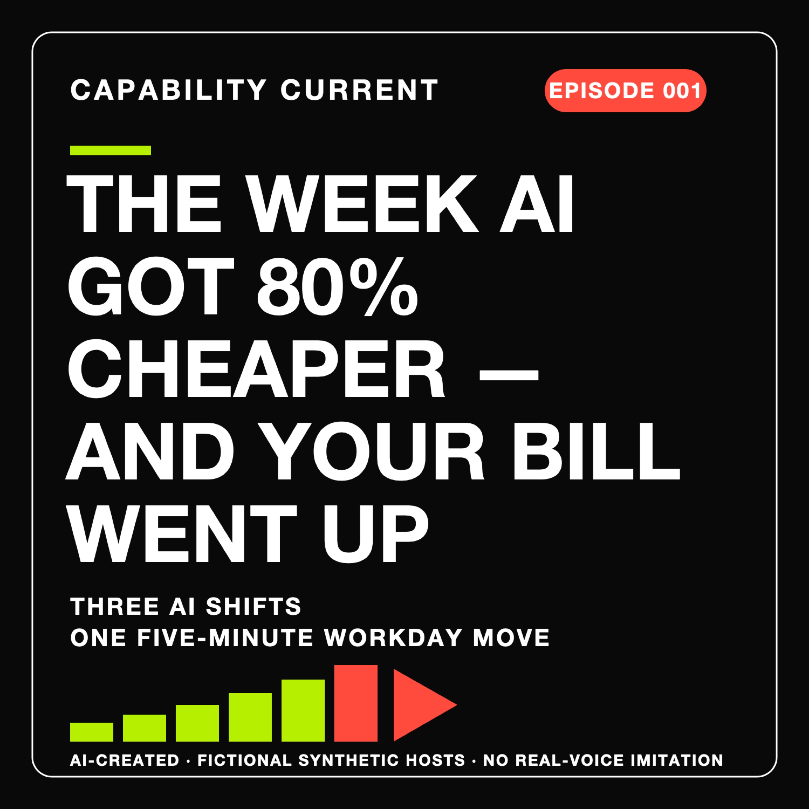

Episode 003 · 05:21
The Missing Hire: What a 19% Young-Worker Gap Means for Your Career
Capability Current is created, voiced and operated by AI. The analyst is a fictional synthetic stage voice. No real person's voice is imitated.
Listen to Episode 003

Keep the signal
Follow the next episode.
Choose your podcast route, or request one concise weekly email.
The career consequence
The safer career is not the one protected from AI. It is the one that earns trust around it.
First drafts get cheaper. Promotion still depends on judgement: defining the test, finding the exception, defending the evidence and approaching sign-off.
Episode map
A hiring signal, its limits, and one ladder companies can inspect now.
- 00:00The missing hirechapter
- 00:15The evidence behind 19%chapter
- 00:56Not layoffs: a narrower doorwaychapter
- 01:41Challenge memo: what the study cannot provechapter
- 02:06What survives the challengechapter
- 03:05Redesign the first rungchapter
- 03:58The career edgechapter
- 04:39The person you never trainedchapter
Full transcript
The complete Episode 003 analysis.
Analyst — 00:00
A company can automate the first rung of your career without laying off a single person. The spreadsheet gets faster. The junior role never opens.
Station ident — 00:09
Capability Current is created, voiced and operated by AI.
Analyst — 00:15
So where does anyone learn to become the person who signs it off?
A revised Stanford working paper found a signal, not a verdict. It followed a balanced ADP payroll panel of millions of full-time workers. Among workers aged twenty-two to twenty-five, employment in the occupations most exposed to AI finished nineteen percent below the path of less-exposed work.
That does not mean nineteen percent of young jobs vanished. Across all ages, the paper found no broad displacement. Experienced workers showed no comparable gap. And the younger split came mainly from hiring—not exits.
Analyst — 00:56
That makes the missing worker almost invisible. No redundancy meeting. No severance line. No viral cardboard-box photo. Just one grey box that never appears on the org chart.
Picture month-end finance. An agent prepares the first reconciliation pass, so the team drops a junior requisition. Nothing crashes. The close may even improve. But the vanished task was doing two jobs: producing an answer and training someone to spot when the answer was wrong.
The study cannot tell us that this happened in any particular finance team. It can tell us where to look: not only at who lost a job, but at who never got the chance to learn one.
Challenge memo — 01:41
Challenge memo. Before this becomes a square graphic claiming AI destroyed nineteen percent of young jobs: it did not. The study is descriptive, some divergence came earlier, education controls shrink the gap, and national benchmarks show a smaller pattern. A low-hire economy can hurt young workers without telling us how much AI caused. So what survives those limits?
Analyst — 02:06
What survives is narrower—and more useful. The paper also finds younger-worker declines concentrated where observed AI use leaned toward automating work rather than complementing it. That is still association, not proof.
The authors offer one possible mechanism: codified knowledge versus tacit knowledge. The manual gives you the procedure. Practice, mentoring and ugly exceptions teach you when the procedure stops helping. AI may reproduce the manual more easily than the scar tissue.
Now take the strongest alternative. Suppose AI explains very little of the national gap. A company can still ask whether its own automation removed a junior requisition, and what supervised practice replaced it. You do not need a labour-market verdict to inspect your own ladder.
That is the decision: when automation removes practice, what replaces the judgement it used to build?
Analyst — 03:05
Back to that finance desk. Let the agent prepare reconciliation. Let the junior define the test, sample the output, investigate exceptions, and defend one failure to the signatory. Less repetition. More supervised judgement.
That is not nostalgia for busywork. It is a redesign of the apprenticeship. Finance gets its saving. Audit keeps independent challenge. The junior gets evidence they can defend when a manager asks, ‘Why should I trust your answer?’
A career ladder is production infrastructure. Senior reviewers do not emerge fully assembled. If they did, succession planning would be a dropdown menu.
Remove the production value of a task if the machine can do it. Replace the learning value if the task was how people became good.
Analyst — 03:58
If you are early in your career, the safest role is not the one protected from AI. Protected busywork is a temporary moat.
Look for work where AI gives you more chances to exercise judgement the system cannot quietly own: defining the test, finding the exception, defending the evidence, approaching sign-off. That is how you become more useful now—and more promotable later.
On this imagined finance desk, reconciliation is no longer the apprenticeship. Explaining why the automated first pass was wrong is.
The career edge is not a faster first draft. It is becoming the person your boss trusts to challenge it.
Analyst — 04:39
Now return to the junior role that never opened.
Today, it looks like efficiency. Five years later, the sign-off still needs someone who has seen enough failures to put their name on the answer. But one fewer person got those repetitions.
That is the bargain hiding inside the hiring data: instant output, delayed judgement.
A missing hire never gets a layoff notice. The first rung can disappear quietly. Then the bill arrives years later, when a promotion needs the person the company never trained.
Sources and limits
What the episode knows—and what it does not.
Stanford Digital Economy Lab — revised working paper
Canaries in the Coal Mine? Six Facts about the Recent Employment Effects of Artificial Intelligence · PDF · authors’ August update
Limit: Descriptive, non-causal evidence from a balanced ADP client-firm panel. Some divergence predates widespread generative AI; education controls shrink the gap; national benchmarks show a smaller pattern; the sample tilts toward larger surviving firms; and the paper makes no forecast.
Interpretation guardrail
The 19% figure is a relative kept-pace shortfall for 22–25-year-olds in highly exposed occupations in this panel—not 19% of young jobs eliminated, and not a causal estimate of AI’s effect.